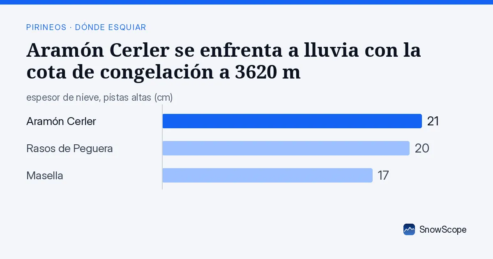

Aramón Cerler se enfrenta a lluvia con la cota de congelación a 3620 m
La cota de congelación del domingo alcanzará los 3620 m, por encima de los 2618 m de cumbre de los remontes de Aramón Cerler, trayendo lluvia a las cotas más altas. Las elevaciones superiores tienen ahora unos 21 cm de nieve, pero la lluvia que cae sobre este manto fino añadirá peso y escorrentía a los ríos de la región.
Consulta la previsión de nieve en tiempo real de Aramón Cerler en la app SnowScopeEspesor de nieve, alertas de nieve polvo y mapa 3D, gratis.
La historia del agua
El domingo, la cota de congelación alcanza 3620 m en su máximo. Esto importa porque cuando la precipitación cae como lluvia en lugar de nieve, se mueve a través del manto nivoso rápidamente y se escurre en arroyos en lugar de almacenar agua en forma sólida. En Aramón Cerler, la cumbre está a 2618 m. El sábado temprano la cota de congelación estará alrededor de 2430 m, todavía por debajo de la cumbre; pero el domingo, el calentamiento y la humedad la elevarán bien por encima, desplazando la precipitación de las cotas altas de sólida a líquida.
Ese cambio altera lo que la montaña almacena y libera en el sistema hidrológico. La lluvia no se filtra en la nieve de principios de temporada; se canaliza hacia abajo y sale como escorrentía rápida hacia la red de pequeños arroyos que bajan por la ladera.
| Estación | Espesor de nieve | Nieve nueva, 72 h | Previsto, próximos días | Cota máx. |
|---|---|---|---|---|
| Aramón Cerler | 21 cm | 2 cm | 1 cm | 2618 m |
| Rasos de Peguera | 20 cm | 3 cm | 0 cm | 2036 m |
| Masella | 17 cm | 2 cm | 0 cm | 2509 m |

Nieve ahora: fina y ya se está fundiendo
Las cotas altas de Aramón Cerler tienen 21 cm a fecha del viernes 6 de noviembre. Una estación cercana en Das midió 3 cm el 2 de noviembre a 1096 m. Este es un manto fino de principios de temporada. En las últimas 72 horas cayeron 2 cm en la cumbre; ninguno en las últimas 24 horas. La tendencia es a la baja: el lunes 9 de noviembre, se prevé que el área cubierta de nieve de los Pirineos disminuya de 660 km² de hoy a 360 km².
El manto nivoso es frágil y no puede absorber agua de lluvia. Los embalses y ríos aguas abajo de la región sentirán el pulso de la escorrentía el domingo.
Qué no se mantendrá congelado
El sábado, la cota de congelación oscila entre 2430 m y 2950 m. Esto significa que las cotas bajas y medias de Aramón Cerler (1503 m a 2060 m) verán temperaturas por encima de cero todo el día, aunque despeje el cielo. Cualquier nieve de superficie restante se ablandará y se fundirá.
El domingo trae el cambio crítico: la cota de congelación alcanza su máximo a 3620 m. Solo las laderas más altas cerca de 2618 m —y solo las orientadas al norte— pueden mantenerse congeladas. Las laderas orientadas al sur y al este se ablandarán rápidamente cuando caiga lluvia en lugar de nieve.
Mecánica de lluvia sobre nieve y riesgo de alud
La lluvia sobre nieve fina de principios de temporada es un evento hidrológico con consecuencias para la estabilidad de laderas. El manto nivoso no es lo bastante denso para absorber el agua extra, y el contacto entre agua de lluvia y nieve antigua puede desencadenar deslizamientos o actividad de aludes. Antes de ir fuera de pista, lee el boletín oficial de aludes de la región.
Desde una perspectiva de almacenamiento de agua, los embalses y ríos de los Pirineos verán un cambio repentino de fusión lenta a escorrentía rápida el domingo. Esto importa para el riesgo de inundación y la gestión del agua aguas abajo.
Dónde encontrar lo que queda
Las otras dos estaciones —Rasos de Peguera (20 cm en cotas altas) y Masella (17 cm en cotas altas)— se enfrentan al mismo estrechamiento de la cota de congelación. Las tres tienen alturas máximas entre 2036 m (Rasos de Peguera) y 2618 m (Aramón Cerler), así que todas experimentarán lluvia en la cumbre el domingo por la tarde.
La región está perdiendo nieve rápidamente: 26 estaciones tienen nieve hoy, se prevé que bajen a 24 el lunes. La nieve de principios de temporada es fina: mantente en pistas acondicionadas y evita terreno donde rocas pueden estar bajo la nieve.
Pronóstico del fin de semana para esquiadores
Comprueba el sitio web de la estación para ver el estado de los remontes y la apertura antes de conducir. Este es un fin de semana marginal. El sábado puede ofrecer algunos descensos en laderas altas orientadas al norte si la estación abre y la nieve sobrevive al comienzo cálido. El domingo será aguanieve o sin nieve desde el mediodía.
Planifica solo para la mañana del sábado, y elige laderas altas orientadas al norte donde la cota de congelación se mantiene más baja más tiempo. Después del mediodía del sábado comienza el calentamiento, y el domingo por la tarde la mayoría de las elevaciones estarán por encima de la línea de lluvia. Este es un fin de semana de exploración, no de polvo.
Consejos para esquiadores
- Ve temprano el sábado si las condiciones lo permiten; la cota de congelación se mantiene por debajo de la cumbre antes de media mañana. Las laderas altas orientadas al norte mantienen la nieve congelada más tiempo.
- El domingo desde el mediodía trae lluvia a todas las cumbres por encima de 2618 m. Espera nieve blanda el sábado por la tarde y condiciones de aguanieve o sin nieve el domingo. Planifica salir el sábado por la tarde o sáltate el fin de semana.
- La nieve de principios de temporada es fina y frágil; rocas están bajo la cobertura. Mantente en pistas acondicionadas. Si vas fuera de pista, lee primero el boletín oficial de aludes —la lluvia sobre nieve aumenta el riesgo de inestabilidad.
- Comprueba el sitio web de la estación para el estado de los remontes. El pronóstico cálido y la nieve fina significan que muchos remontes pueden no abrir este fin de semana. Confirma antes de conducir.
- Las cotas altas tienen 21 cm en el mejor de los casos en las tres principales estaciones de la región. Planifica solo para la mañana del sábado, en laderas altas orientadas al norte donde el congelamiento dura más tiempo.
Sobre estas cifras
Los espesores de nieve de las estaciones son la nieve más profunda en las pistas altas según el modelo de nieve de SnowScope (unos 1 km, cálculo del 5 de noviembre); son estimaciones para una zona, no una medida en un punto. Los valores de las estaciones de medida son medidas en la fecha indicada. Las previsiones pueden cambiar. Consulta siempre el boletín oficial de aludes antes de salir fuera de pista.
Boletines oficiales de aludes: Météo-France / Meteocat / AEMET
Citar este informe
Para investigación, docencia o prensa: cifras y gráficos reutilizables libremente bajo CC BY 4.0 con esta cita.
SnowScope (2026), Aramón Cerler se enfrenta a lluvia con la cota de congelación a 3620 m, https://snowscope.app/blog/es/2026/11/pyrenees-where-to-ski-this-weekend-6-november-2026.html, consultado el 2026-11-06
SnowScope (Atlas Labs). (2026, November 6). Aramón Cerler se enfrenta a lluvia con la cota de congelación a 3620 m. SnowScope snow reports. https://snowscope.app/blog/es/2026/11/pyrenees-where-to-ski-this-weekend-6-november-2026.html
BibTeX
@misc{snowscope2026pyreneeswheretoskithiswe,
author = {{SnowScope (Atlas Labs)}},
title = {Aramón Cerler se enfrenta a lluvia con la cota de congelación a 3620 m},
year = {2026},
month = nov,
howpublished = {\url{https://snowscope.app/blog/es/2026/11/pyrenees-where-to-ski-this-weekend-6-november-2026.html}},
note = {Published 2026-11-06 10:53 UTC; accessed 2026-11-06}
}· CC BY 4.0 · Métodos, datos y herramientas →
Aramón Cerler: nieve y temperatura según la altura, este invierno vs el pasado (herramientas) →
Sigue Aramón Cerler
Gratis: un aviso cuando llega la nieve y la previsión cada mañana.
Más partes de nieve

Cuánto tiempo estuvieron blancos los Pirineos cada invierno desde 2000-01, vistos por satélite, y el espesor de nieve en 10 estaciones con series largas. Tres inviernos flojos seguidos terminaron en 2025-26; este otoño ha empezado con normalidad.

Para una semana de esquí familiar a buen precio en diciembre en Astún-Candanchú, apunta a finales de mes, cuando las pistas altas tienen buena nieve en el 67 % de los inviernos pasados.

El nivel de congelación alcanza 3400m–3600m durante los próximos tres días, trayendo lluvia al manto de nieve del 09 al 11 de noviembre. Previsión del 08 de noviembre.